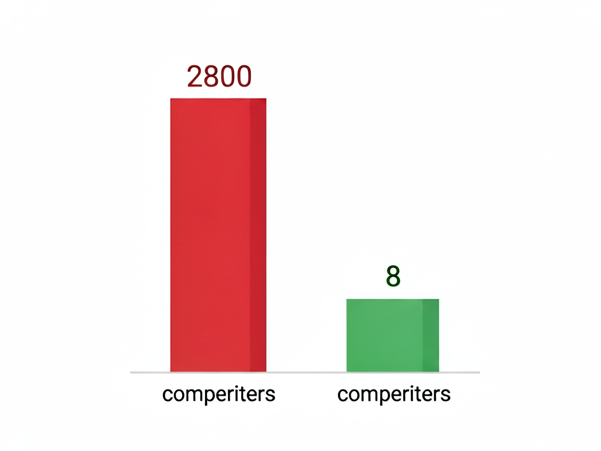

昨天收到一条私信，来自一位备考2026国考的同学。她说："我刷了三个月的行测，每次都卡在65分，死活提不上去。是我不够聪明吗？"
我问她："你选岗了吗？"
她说还没。
我说："那你现在做的第一件事，不是刷题，是先搞清楚你要考什么岗位。"
这听起来像反直觉。毕竟大家都觉得，国考的第一关是笔试。你行测不达标，申论写不明白，连入场的资格都没有，还谈什么选岗？
但现实往往是这样的：每年国考公告一出，总有几万人在最后一刻疯狂报名，结果报进了一个竞争比超过3000:1的岗位——某部委下属单位，专业不限，本科即可。报名人数瞬间爆炸，60分成了入围分数线。
而同一时间段，另一个同样需要笔试的岗位，招3个人，报名50多人，45分就能进面。
同样的分数，完全不同的命运。差距不在你的能力，而在你的选择。
很多人不知道，国考真正的第一道关卡，是选岗。
选对了岗，60分能进面；选错了岗，75分都可能陪跑。这不是危言耸听，而是每年国考数据重复证明的事实。
我们来看一组真实场景：
去年国考，某个税务系统的基层岗，因为位于中西部县城，虽然专业要求严格（限法学、限户籍、限应届生），最终竞争比只有8:1。平均分52分，最低进面分数46分。
同一个公告里，某个东南沿海发达城市的税务岗，不限专业，不限户籍，最终竞争比达到2800:1。进面分数线73分。
同样是税务局，同样的笔试科目，截然不同的通关难度。
这是什么原因？
答案其实藏在三个变量里：专业限制、地域差异、身份门槛。
专业限制越多，报考门槛越高，竞争越小。地域越偏远，待遇越低，竞争越小。限定应届生、限定基层工作经历、限男性，这些条件越多，能报的人越少，上岸概率越大。
但问题是——90%的考生在报名前的第一件事不是研究这些数据，而是凭感觉。
他们看到"不限专业"这四个字就觉得香，觉得机会多了。但实际上，"不限专业"恰恰是最危险的信号——因为它意味着任何人都能报，而你，只是其中之一。
选岗这件事，我建议你按照下面这个框架来思考：
国考岗位表有上万条。你不可能一个一个看。第一步是缩小范围。
打开国家公务员局官网发布的职位表，用你的个人信息做筛选：
每一个条件，都是一道过滤器。把你所有的条件叠加上去，剩下的岗位就是你的"候选池"。
我见过很多考生，只看了专业和学历就匆匆报名，完全忽略了其他可能的筛选条件。比如有人同时持有英语六级和法律职业资格证，却只报了一个"本科即可、不限证书"的岗位——他白白浪费了自己的额外优势。
缩小范围后，你会得到一个候选池。接下来要做的，是根据竞争概率排序。
排序的核心原则是：优先选择"限制条件最多"的岗位。
听起来好像反直觉——限制越多，能选的就越少啊。但正因为限制多，能符合条件的人也少，竞争就小了。
举个例子：
| 维度 | 岗位A（偏远县城税务） | 岗位B（沿海城市税务） |
|---|---|---|
| 专业限制 | 限法学 | 不限专业 |
| 身份限制 | 应届生 + 本地户籍 | 无 |
| 竞争比 | 8:1 | 2800:1 |
| 进面分数 | 46分 | 73分 |
50人选1 vs 50000人选1，哪个更容易？答案不言而喻。
这就是所谓的"用门槛换概率"。
排序完了，最后一步是看你自己想要什么。
有人愿意去西部，因为竞争小、上岸概率高。有人坚决不去偏远地区，哪怕多等一年也不妥协。
这是个人选择，没有对错。但你要清楚自己的底线在哪里，然后把符合底线的岗位再筛一遍。
我推荐的做法是列一张Excel表格，把候选池里的每个岗位按以下条件打分：
| 岗位名称 | 专业限制数 | 身份门槛数 | 地域偏好 | 竞争比预测 | 综合得分 |
|---|---|---|---|---|---|
| 西部县税务 | 2 | 2 | ★★☆ | 10:1 | 85 |
| 东部市税务 | 0 | 0 | ★★★★★ | 2800:1 | 20 |
综合得分最高的那个，就是你应该优先考虑的目标。
这套方法听起来简单，但真正能做到系统化操作的考生不足10%。大多数人凭直觉选岗，就像开盲盒——运气好的碰上了，运气不好的年年陪跑。
回到开头那个同学的困惑：刷了三个月行测，每次都卡在65分。
65分是个很有意思的数字。它意味着你的基础知识已经具备了，但还没有形成系统的方法论。
具体来说，这个分数段的考生通常有以下特征：
这种分数结构的背后，是一个根本问题：你在学习，但没有在"练方法"。
举个例子。资料分析是行测里提分最快的模块，因为它本质上就是一个"找数据+套公式+做计算"的过程。只要你背熟了增长率、比重、倍数这三个核心公式，再掌握截位直除的速算技巧，正确率可以从60%提升到85%以上。
但你不去背公式，也不练速算，而是花大量时间在言语理解的成语上反复记忆——那些东西短期确实难提分。
所以正确的策略应该是：先把资料分析和判断推理这两个"方法论模块"拉起来，再用它们的时间去补短板。

很多人有一个误解：觉得行测考得好的人脑子快、反应灵敏。
实际上，国考行测的题目难度远低于高考数学压轴题。真正拉开差距的不是智商，而是做题效率和策略分配。
一个典型的行测高分考生，他的答题节奏是这样的：
整个过程，他不是把所有题都做完，而是战略性放弃。
这就是为什么很多人刷了无数题还是上不去分——因为你一直在"做题"，但从来没有练过"取舍"。
国考的本质是一场资源分配游戏。你的时间和注意力是有限的资源，你需要把它们投在最可能产生回报的地方。
选岗和行测提分，看似是两件完全不相关的事，但它们有一个共同的底层逻辑：找到杠杆，然后用最小的力气撬动最大的结果。
选岗的杠杆是"信息差"——你知道怎么筛选、怎么排序、怎么用限制条件保护自己，而你对手不知道。
行测提分的杠杆是"方法论"——资料分析的速算技巧、判断推理的分类刷题、言语理解的解题框架。
申论的杠杆更明显。国考申论本质上是一道标准化答题游戏，不是自由发挥的作文竞赛。它有固定的题型分类（归纳概括、提出对策、综合分析、应用文公文、大作文），每种题型都有自己的答题框架。
很多人花大量时间练习"文笔"，以为申论考的是写作能力。错了。申论考的是在给定材料里准确提取信息，然后用规范语言写成规定格式的答案。
你见过一个写了一辈子公文的人第一次接触申论吗？他们的答案往往不如一个掌握了答题模板的非专业人士。
国考备考这件事，拆开看是三个环节：选岗、笔试、面试。
选岗决定了你的竞争对手是谁。
笔试决定了你能不能进考场。
面试决定了你能不能上岸。
大多数人的做法是——直接跳到第二个环节，埋头刷题。
但真正的高手会从第一个环节就开始布局：他们提前研究历年数据、分析岗位趋势、预判竞争比，然后在报名截止前最后一刻锁定最优选项。
笔试阶段，他们用方法论替代盲目刷题。资料分析先提分、申论模板先背熟、行测节奏先练出来。
面试阶段，他们提前准备结构化面试的答题框架，而不是等到笔试过了才临时抱佛脚。
这三个环节环环相扣，任何一个环节出问题，前面所有的努力都会白费。
如果你现在正在备考，我想给你一个建议：
停下来一天。
关掉刷题APP，合上行测讲义，花一个小时想清楚一件事——你明年到底要考哪个岗位。
不是随便选一个，不是听朋友推荐一个，而是用系统的方法，把你的条件、偏好、风险承受能力全部放进去，算出一个最优解。
然后再回去刷题。
你会发现，当你带着"目标感"去学习的时候，每一道题的目的都不一样了。你不再是为了做题而做题，你是在为那个具体的岗位铺路。
这条路，走得会更稳。